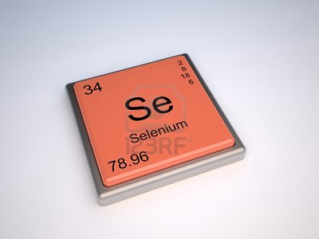

SELENIO:

El selenio se puede encontrar en varias formas alotrópicas. El selenio amorfo existe en dos formas, la vítrea, negra, obtenida al enfriar rápidamente el selenio líquido, funde a 180 °C y tiene una densidad de 4,28 g/cm, la roja, coloidal, se obtiene en reacciones de reducción; el selenio gris cristalino de estructura hexagonal, la forma más común, funde a 220,5 °C y tiene una densidad de 4,81 g/cm y la forma roja, de estructura monoclínifunde a 221 °C y tiene una densidad de 4,39 g/cm.
 Ir a página principal
Ir a página principal